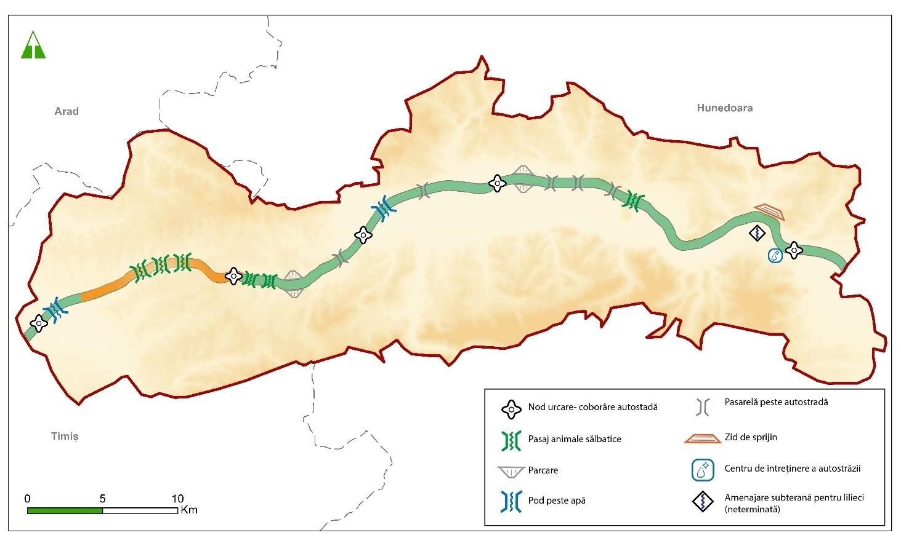
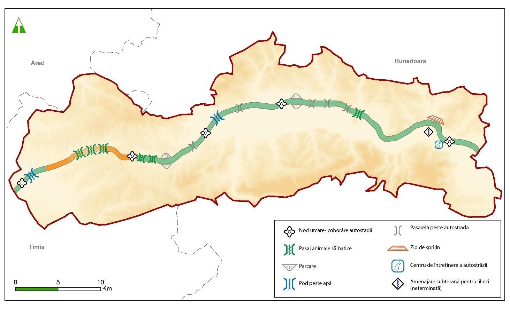
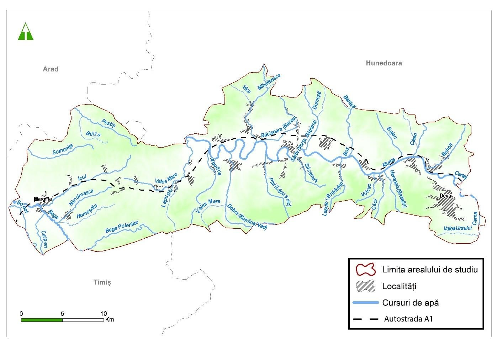
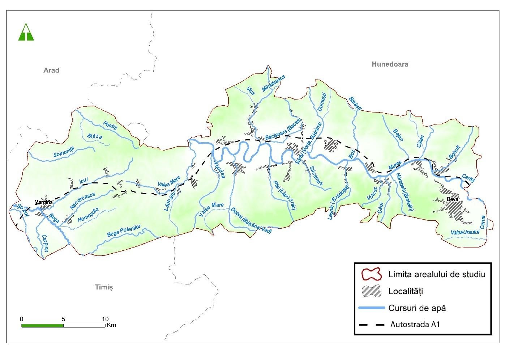
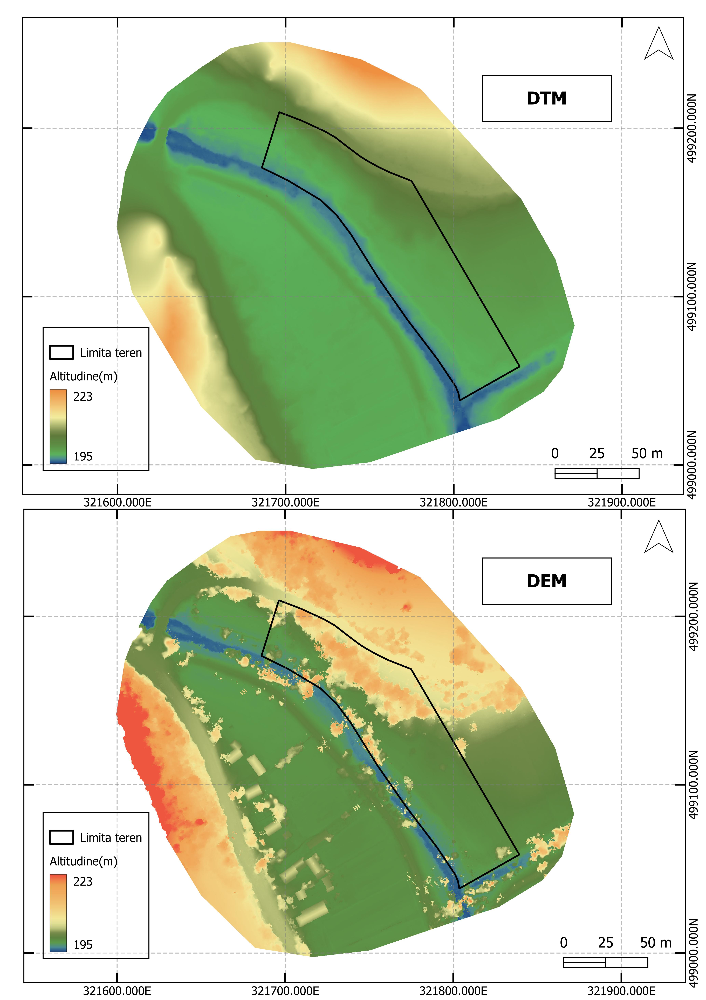
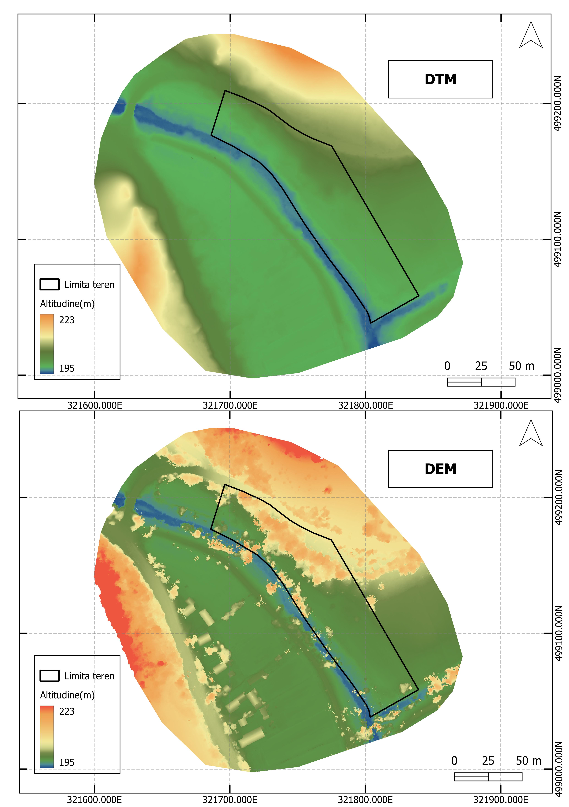

Corondan Flavius
Personal Portfolio


Sârbi House


In this project, I created a complete model of my house in Sârbi using a point cloud generated by drone‐based photogrammetry. From that point cloud, I produced a 2D survey in AutoCAD comprising floor plans, elevations, and sections and then developed a fully detailed 3D model in Archicad that accurately represents all architectural elements.
Calea Buziașului Industrial Zone


In this project, I developed a resilient‐oriented proposal for an urban site on the outskirts of Timișoara. After studying the location, I formulated a vision for living patterns and spatial organization. The main challenge was to harmonize the site’s existing characteristics with the demands of modern urban life. The proposal responds to the need for efficient densification while valorizing the local specificities, even though the site is surrounded by hostile elements.
A1 Motorway (Deva–Margina Section)


 

 



I analyzed the geographic impact of constructing the A1 motorway on the Deva–Margina segment, focusing on its effects on the relief, hydrographic network, vegetation, and fauna. Although the motorway’s construction altered the original landscape, measures were taken to ensure a harmonious coexistence between infrastructure and nature. The project enhanced regional connectivity and delivered a positive socio-economic impact by reducing travel times, boosting local tourism, and fostering the emergence of new services.
Other Representations


 



The final section is a collection of boards in which I’ve combined various representations created in CAD and GIS software: from 3D representations, historical facades and road profiles to tourist maps, contour lines, and digital elevation/ terrain models.